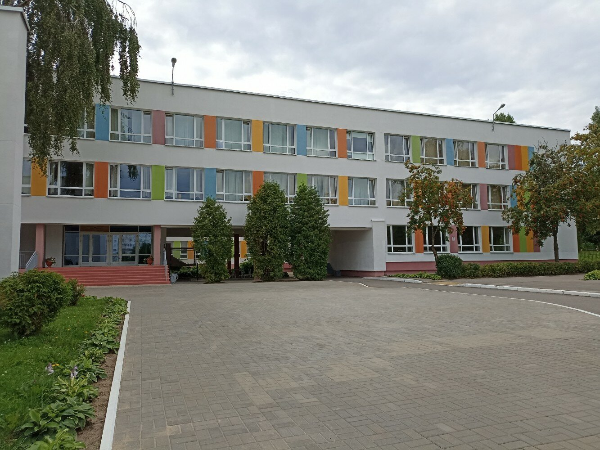

Я, студент 240520 группы физико-математического факультета, Соляник Павел Владимирович, проходил педагогическую практику в ГУО «СШ №167 г. Минска».
Основные цели прохождения практики: освоение методик преподавания физики и информатики, используемых в учебном процессе, развитие собственных педагогических способностей, овладение современными технологиями обучения и воспитания.
В первый день практики была проведена беседа с заместителем директора, в ходе которой нас познакомили со школой, ее структурой, учителями и классами, в которых мы давали зачетные уроки.
За время практики мною были проведены 8 зачетных уроков по физике в 10 «В» классе, 6 по информатике в 10 «А» 10 «В». Также, были посещены уроки по предметам практики в параллелях с 7 по 11 класс с целью проведения анализа деятельности педагогов и методик подачи материала, построению урока.
Я ознакомился с планом воспитательной работы и принимала участие в воспитательной работе классного руководителя в 10 «В» классе. Мной был проведен классный час по теме “Экологические проблемы Беларуси”.
В целом, я оцениваю свою практику удовлетворительно. План педагогической практики выполнен полностью. Мне удалось реализовать все намеченные цели и задачи, приобрести практический опыт и навыки работы с классным коллективом с учетом его психологической структуры и уровня развития; применить свои знания по педагогике; сформировать умения по организации взаимодействия с классом на и вне урока; умение грамотно распределять время урока и нагрузку в соответствии с уровнем знаний как в классе, так и отдельных учеников; умение анализировать возникающие в классном коллективе ситуации, требующие педагогического вмешательства; умение анализировать (с психологической, педагогической и методической точек зрения) уроки и воспитательные мероприятия, проводимые учителями.
Цель урока: ознакомление обучающихся с информационными процессами, проходящими в естественных и искусственных системах.
Задачи урока:
Тип урока: урок обобщения
Формы работы на уроке: фронтальная (беседа), самостоятельная работа
Доброго времени суток, уважаемые учащиеся! Давайте начнем наш урок.
Давайте вспомним:
Теоретическая часть:
Практическая часть:
Разберите и выполните на компьютере программу...
Составьте программу, которая удваивает значения четных элементов массива...
Повторите предыдущие параграфы.